Whatzupwitu
Friend to the show and resident goofass Tabatha challenged us to decorate a living space inspired by the 1993 music video for “Whatzupwitu” by Edward Murphy featuring Mike Jackson.
The video, directed by Wayne Isham, features the best in early '90s screensaver technology as well as the Harlem Boys Choir. It is literally and actually banoodles, and I honestly thought I imagined it, but it's quite real. Thanks, Tabatha! 💕
(Also, I love this song. Idc idc idc. Argue with your momma!)
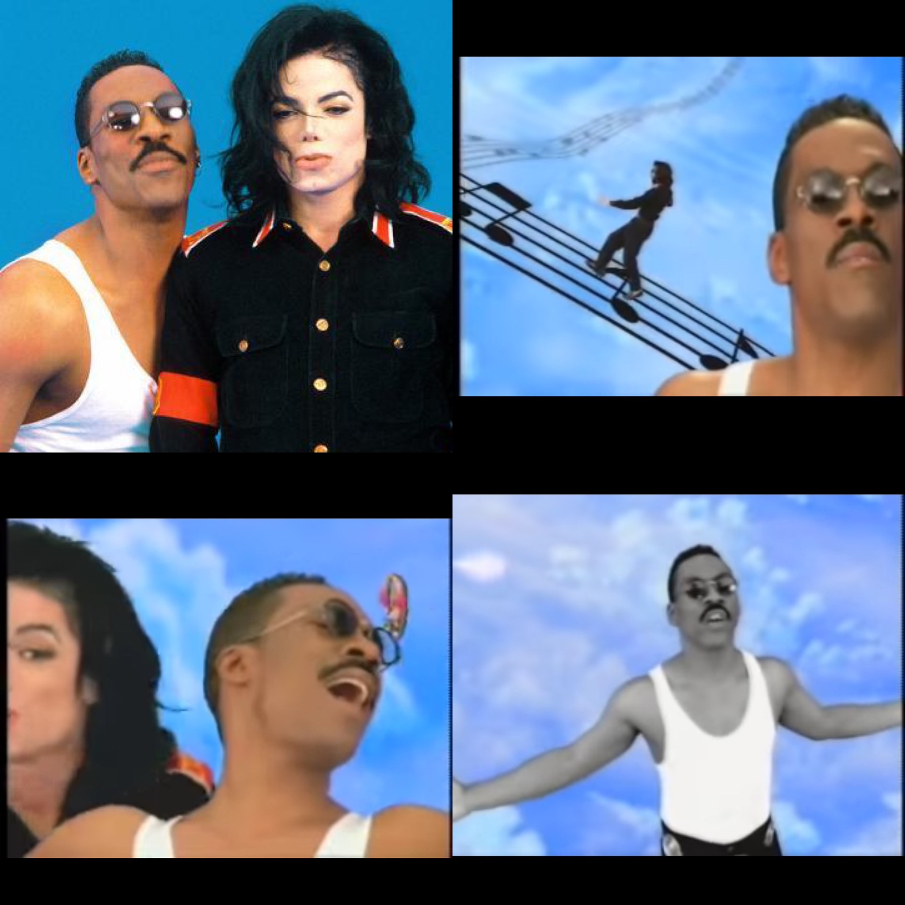
For this design challenge, we took our cues from the music video itself. Against a backdrop of bright blue skies and floating musical notes, we found plenty of inspiration for a living space that embraces a little bit of the absurd.
We brought the video's unmistakable backdrop indoors with a cerulean cloud wallpaper mural and a sweeping musical notation wall decal. A vintage red velvet drop-arm sofa serves as the centerpiece of the room, complemented by a Mario Bellini seating module in Nettle Olive and the beautifully sculptural Mars Arm Chair from Noir.
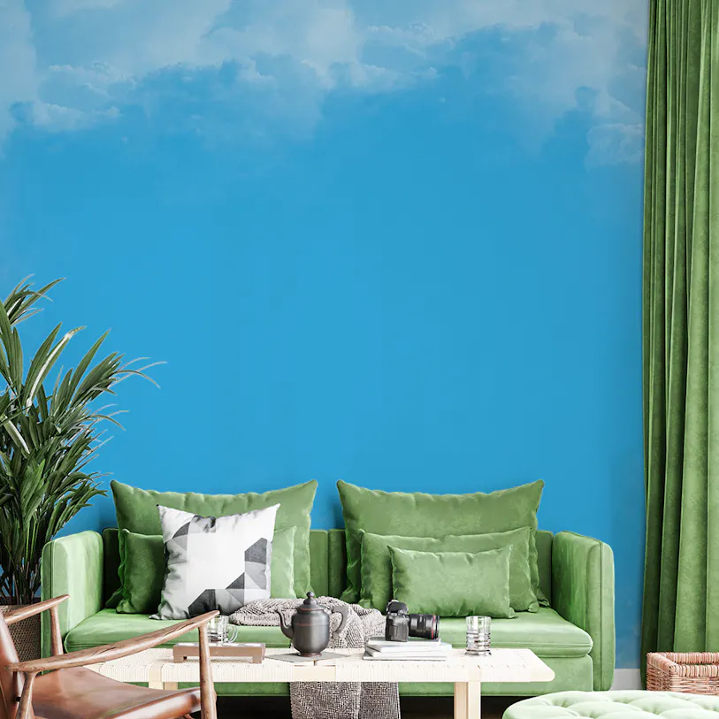
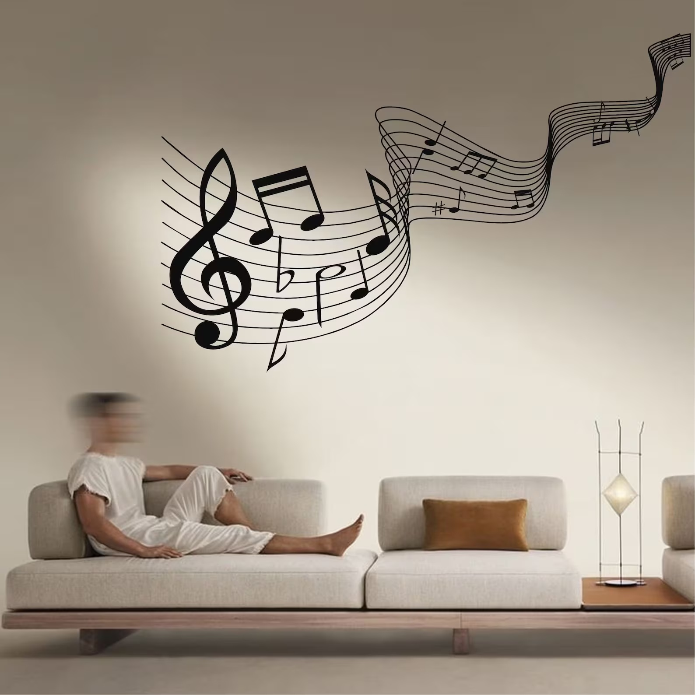
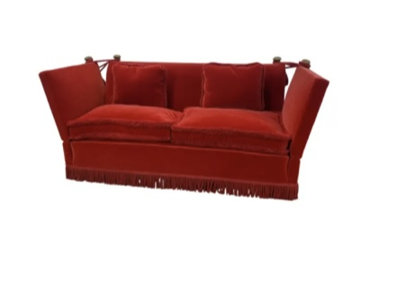
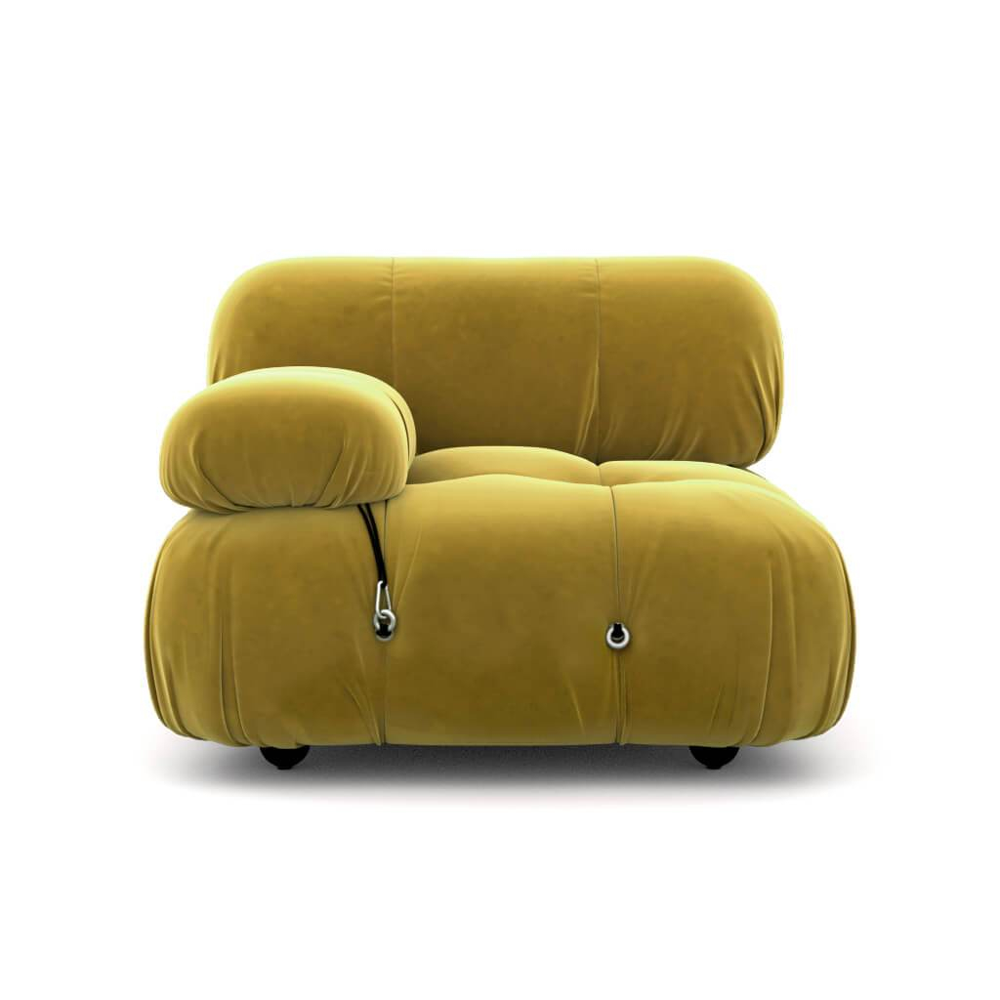
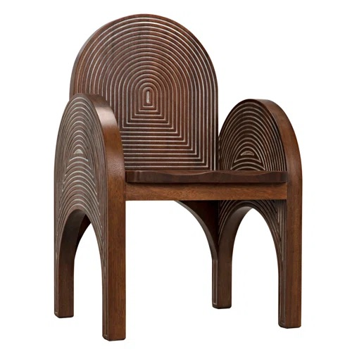
A Paul Evans chrome Cityscape side table introduces a reflective element to the space, while the low, organically shaped Isla concrete coffee table softens some of the more angular furnishings. The geometric Luna Wool Rug adds another layer of visual interest.
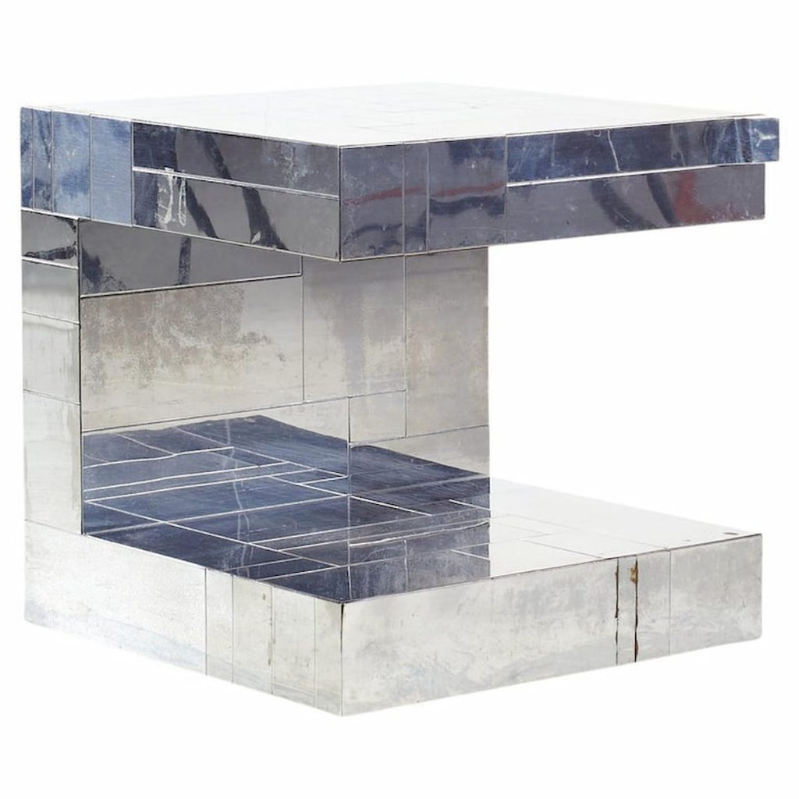
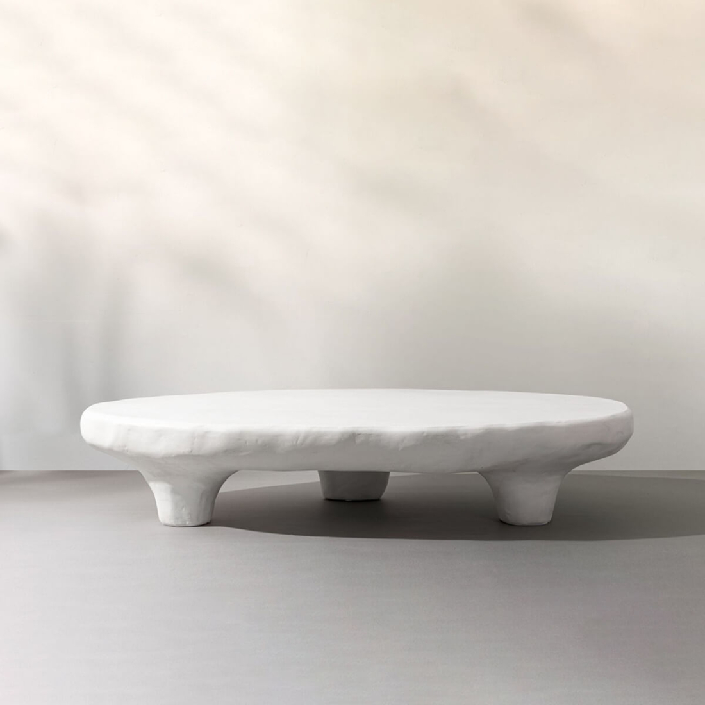
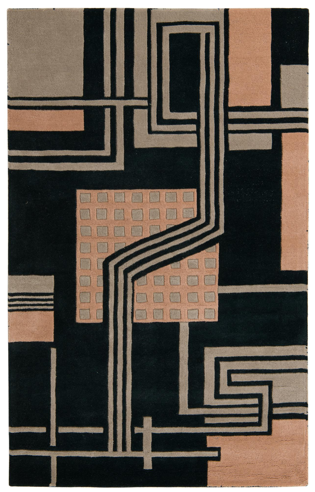
Perhaps the most delightfully surreal additions to the room are the Champagne floor lamps designed by Salvador Dalí and Edward James between 1938 and 1939. Their stacked, champagne coupe-inspired forms feel right at home in a space inspired by such an unconventional music video.
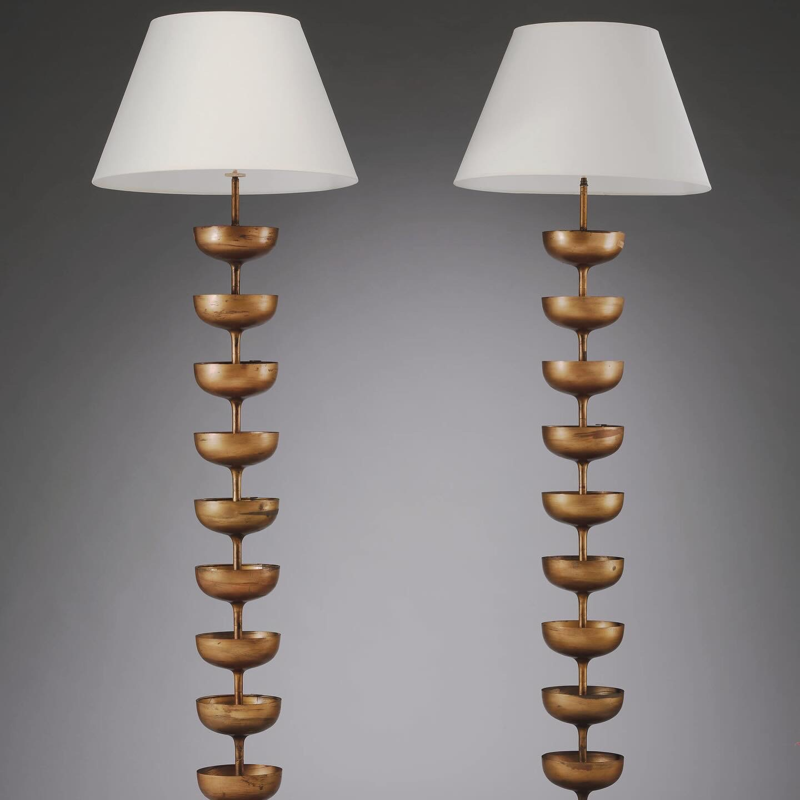
We rounded out the room with Anthropologie's Gleaming Primrose mirrors and, in a nod to Eddie Murphy's comedic roots, a vintage photograph of comedian Redd Foxx, who was the James Brown to Eddie Murphy's Michael Jackson.
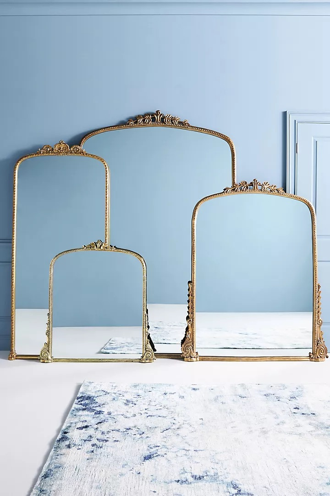
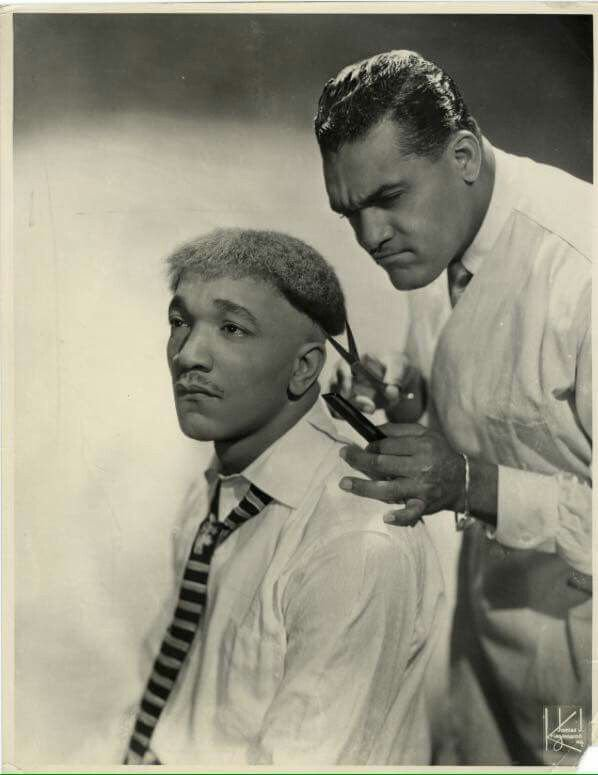
Who knew a 1993 Eddie Murphy music video could inspire such an interesting room?

Let me know your thoughts. And if you'd like to see a room inspired by your favorite album or music video, please reach out directly to I Spaced Out with suggestions.
Design Credits
- Red Drop Arm Knoll-style velvet sofa: Vintage, 1stDibs
- Mars Arm Chair: Noir Trading Inc. for Perigold
- Mario Bellini Sofa, Armrest Module Velvet in Nettle Olive: Eternity Modern
- Isla Modern Organic Shaped Tripod Low Concrete Coffee Table: Eternity Modern
- Luna Wool Rug: AreaRugs.com
- Paul Evans Mid Century Chrome Cityscape Side Table: Modern Hill
- Cerulean Cloud Wallpaper Mural: Giffywalls
- Gleaming Primrose Mirror: Anthropologie
- Musical notation wall decal: Etsy (vendor no longer available)
- Vintage Redd Foxx photograph: Photographer and original source unknown
- Champagne lamps: Salvador Dalí and Edward James, 1938–39, England. Museum nos. W.1-2019 and W.2-2019. © Victoria and Albert Museum, London.